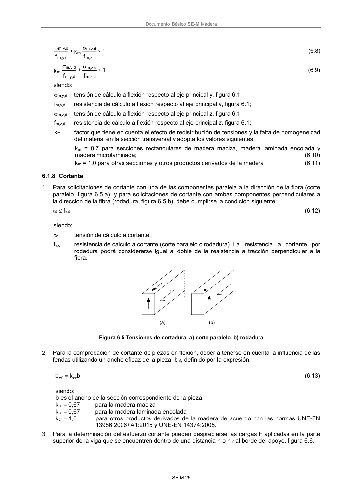

DB-SE-M Madera · edición 2019-12-20 · capa oficial
Documento DB-SE-M-oficial · SHA-256 del PDF 26b5819839ebfda78b0b119c5e76a0a37773b0d763c05688541870075df93718
Página física 31 de 132.
Copia fiel del PDF fuente · Fuente oficial
Ficha de la disposición en la fuente oficial
Formato: Texto de la página (Markdown)
Documento Básico SE-M Madera SE-M 25 1 f k + f d z, m, d z, m, m d y, m, d y, m, (6.8) 1 f + f k d m,z, d m,z, d y, m, d y, m, m (6.9) siendo: m,y,d tensión de cálculo a flexión respecto al eje principal y, figura 6.1; fm,y,d resistencia de cálculo a flexión respecto al eje principal y, figura 6.1; m,z,d tensión de cálculo a flexión respecto al eje principal z, figura 6.1; fm,z,d resistencia de cálculo a flexión respecto al eje principal z, figura 6.1; km factor que tiene en cuenta el efecto de redistribución de tensiones y la falta de homogeneidad del material en la sección transversal y adopta los valores siguientes: km = 0,7 para secciones rectangulares de madera maciza, madera laminada encolada y madera microlaminada; (6.10) km = 1,0 para otras secciones y otros productos derivados de la madera (6.11) 6.1.8 Cortante 1 Para solicitaciones de cortante con una de las componentes paralela a la dirección de la fibra (corte paralelo, figura 6.5.a), y para solicitaciones de cortante con ambas componentes perpendiculares a la dirección de la fibra (rodadura, figura 6.5.b), debe cumplirse la condición siguiente: d fv,d (6.12) siendo: d tensión de cálculo a cortante; fv,d resistencia de cálculo a cortante (corte paralelo o rodadura). La resistencia a cortante por rodadura podrá considerarse igual al doble de la resistencia a tracción perpendicular a la fibra. Figura 6.5 Tensiones de cortadura. a) corte paralelo. b) rodadura 2 Para la comprobación de cortante de piezas en flexión, debería tenerse en cuenta la influencia de las fendas utilizando un ancho eficaz de la pieza, bef, definido por la expresión: b k b cr ef (6.13) siendo: b es el ancho de la sección correspondiente de la pieza. kcr = 0,67 para la madera maciza kcr = 0,67 para la madera laminada encolada kcr = 1,0 para otros productos derivados de la madera de acuerdo con las normas UNE-EN 13986:2006+A1:2015 y UNE-EN 14374:2005. 3 Para la determinación del esfuerzo cortante pueden despreciarse las cargas F aplicadas en la parte superior de la viga que se encuentren dentro de una distancia h o hef al borde del apoyo, figura 6.6.
